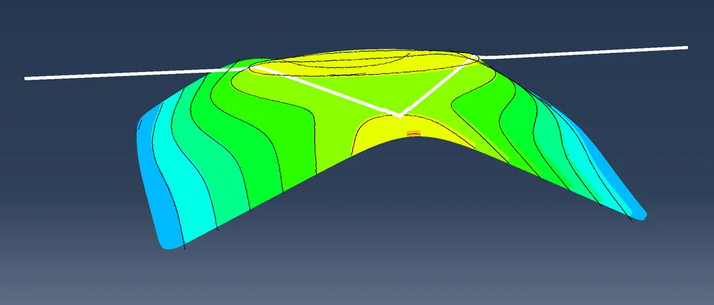
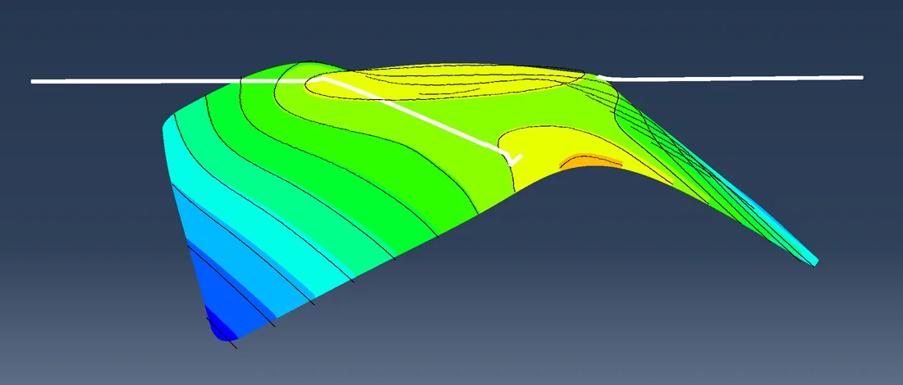
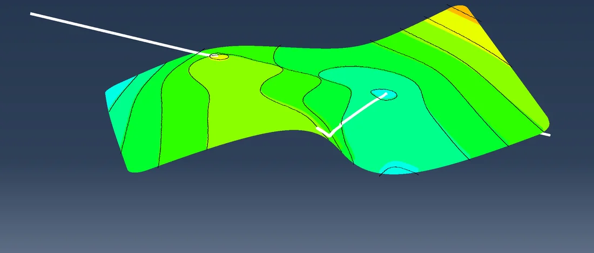
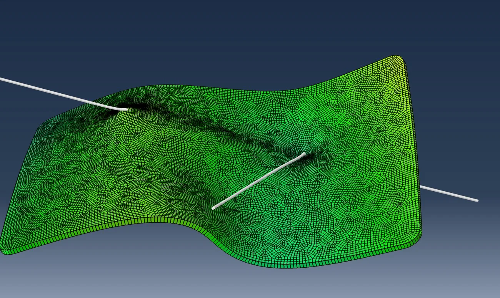
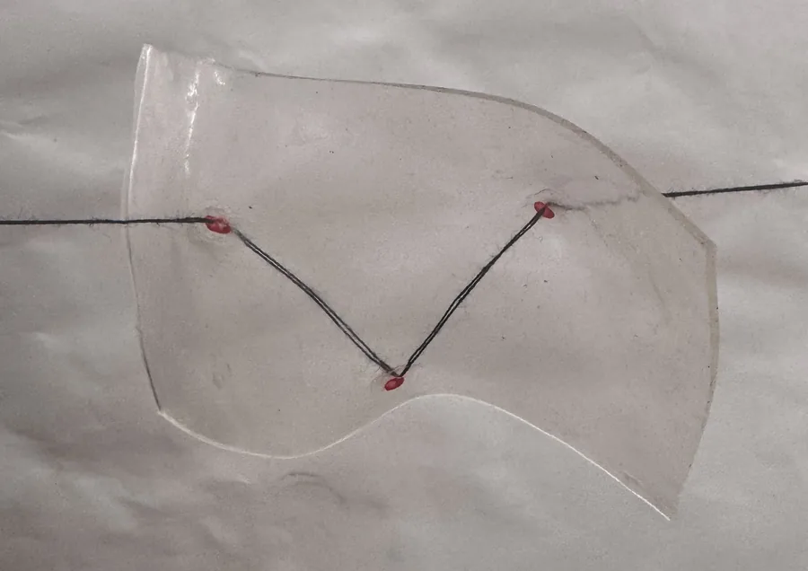

Purdue University · 2026–present · Prof. Alex Chortos
Thread-shaped soft membranes
How the routing of a thread controls the 3D shape of a soft membrane.
Research question
How does the path of a thread decide the 3D shape of a soft membrane?
My contribution
Independently started this new direction in the lab, from Abaqus/COMSOL models to membrane selection and experimental validation. Reformulated the simulation as a static equilibrium problem, making it ~10× faster (≈1 h → 6 min in tested cases). Now building a simulation dataset for inverse design.
Finding
The thread’s path sets the shape, and the model matches the real membrane.
Pulling the thread (simulation)
Same membrane, same pull, three thread paths



U / D: thread above / below the membrane.
Simulation vs. experiment

Simulation
Experiment (double-coated tape membrane)